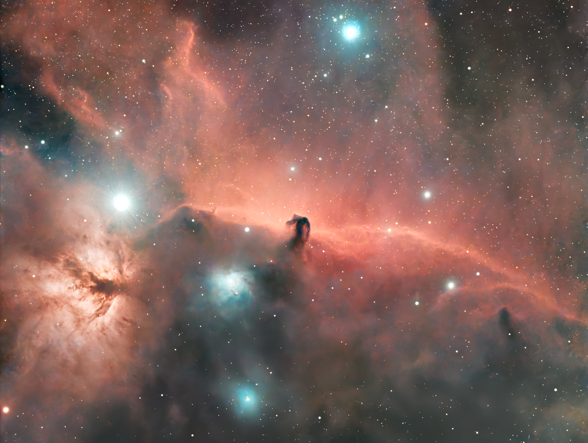
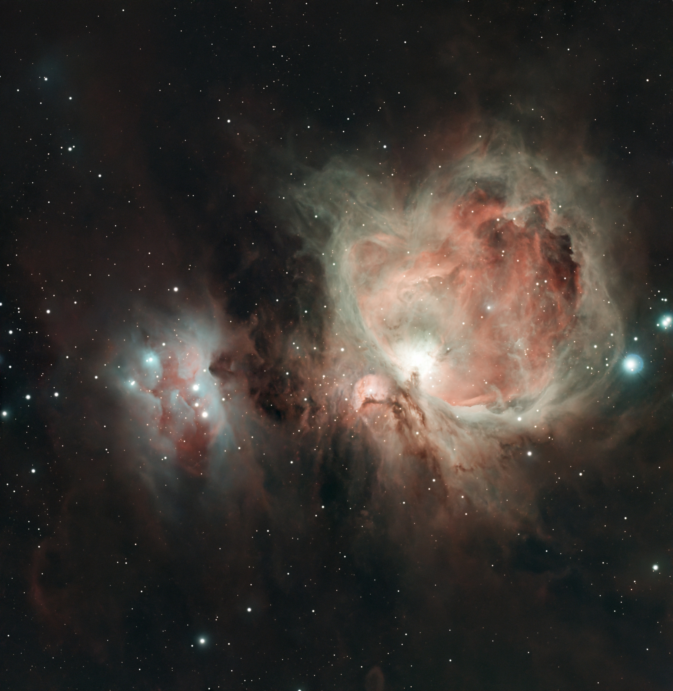
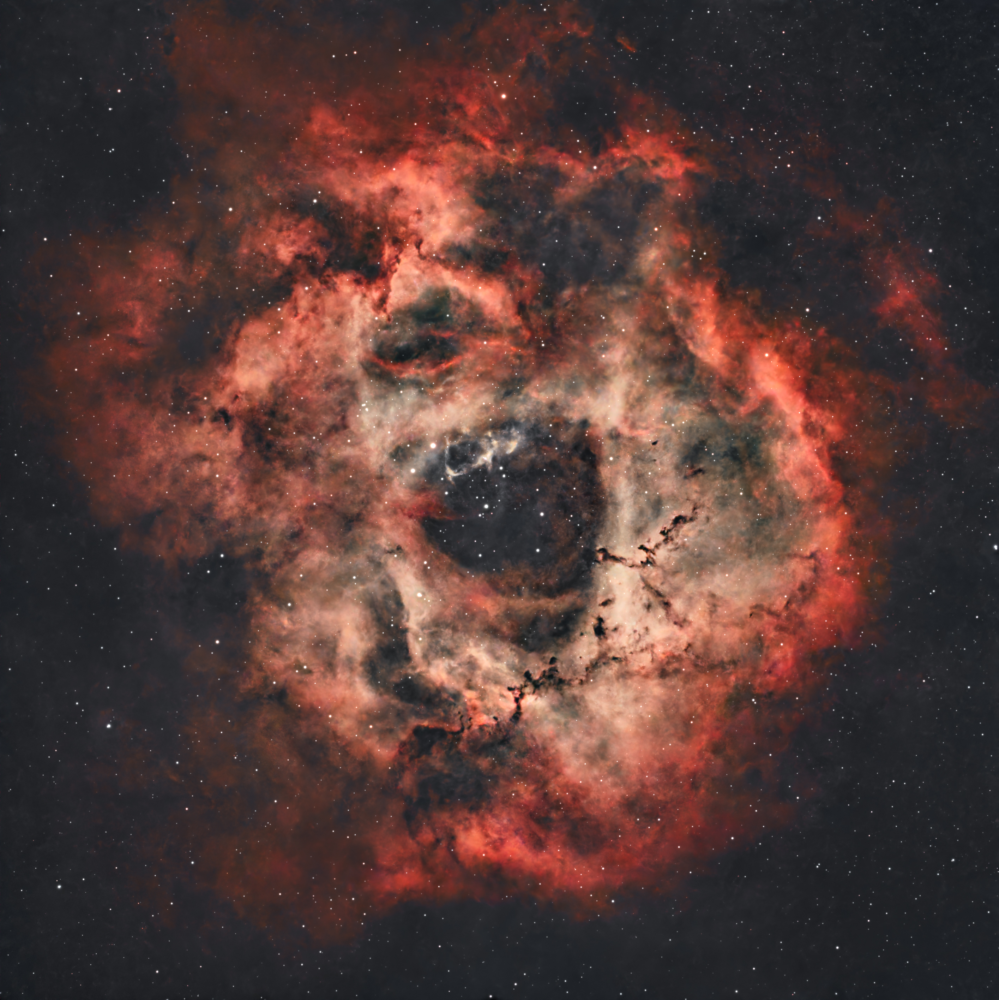
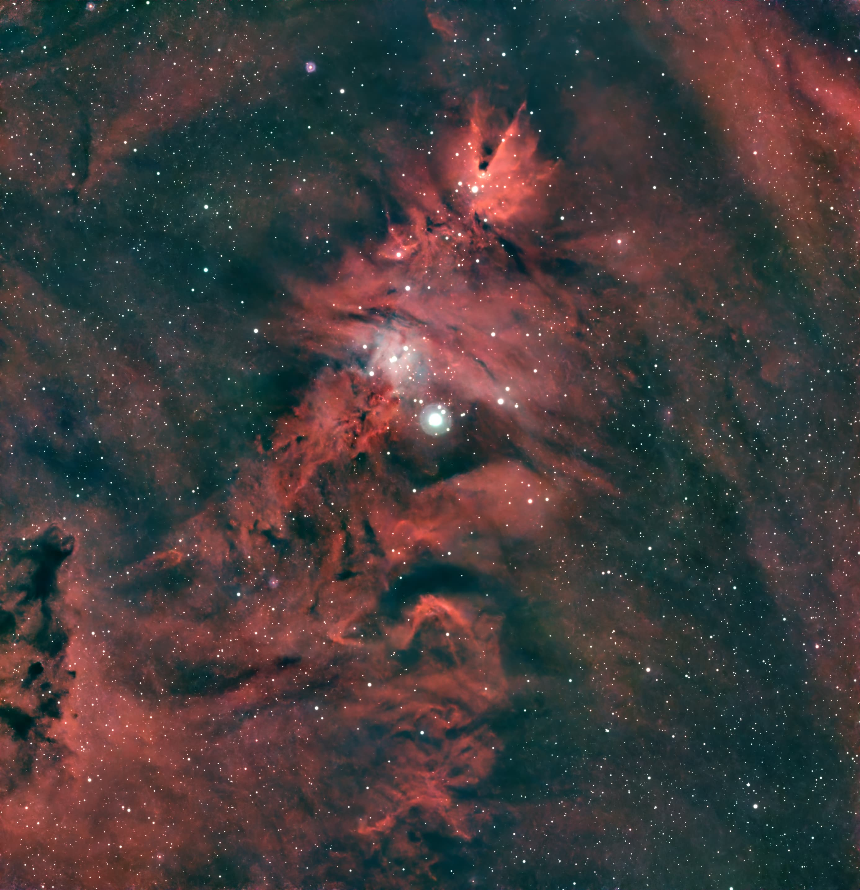
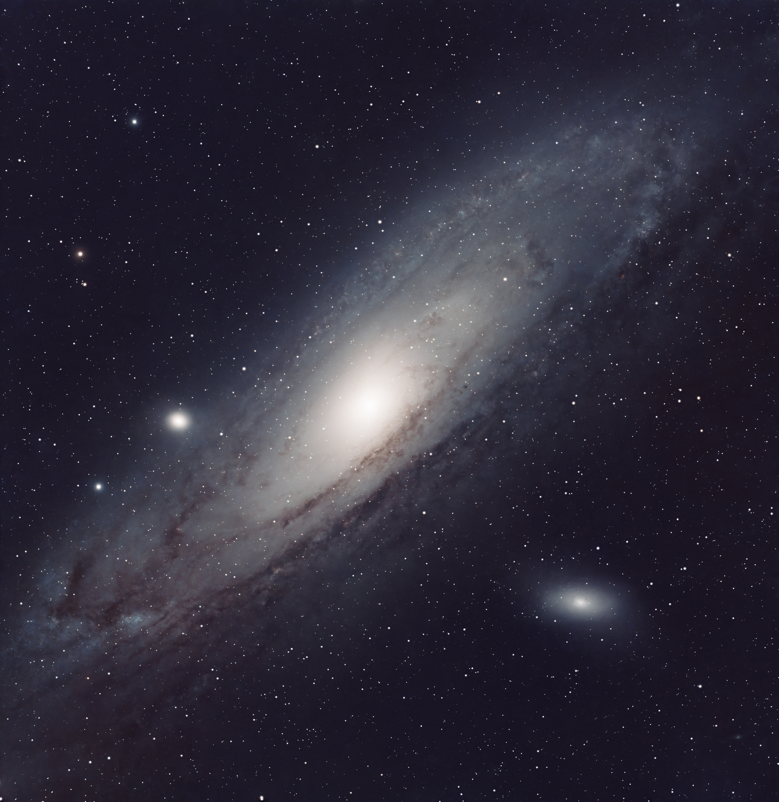
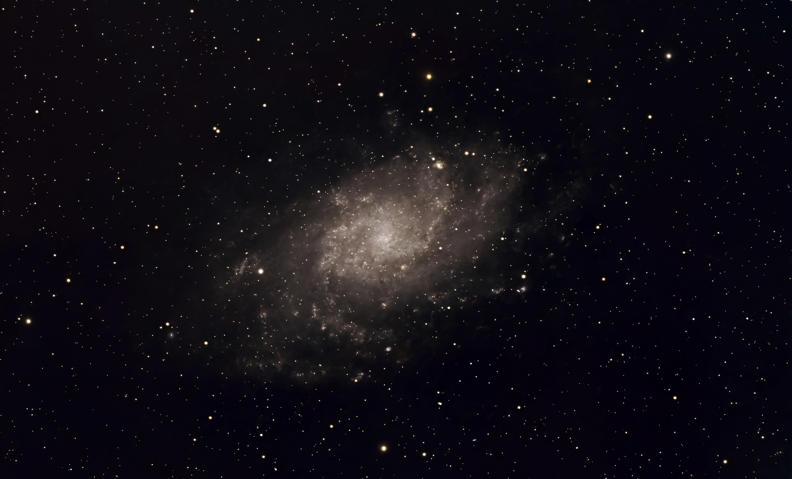
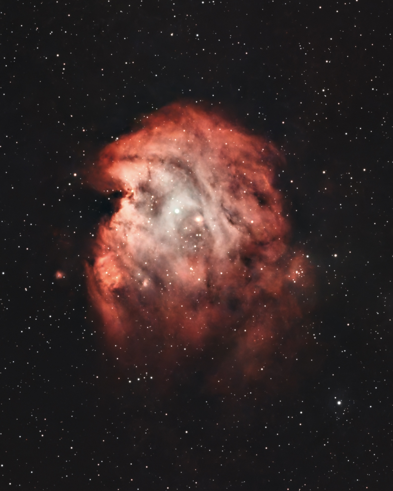
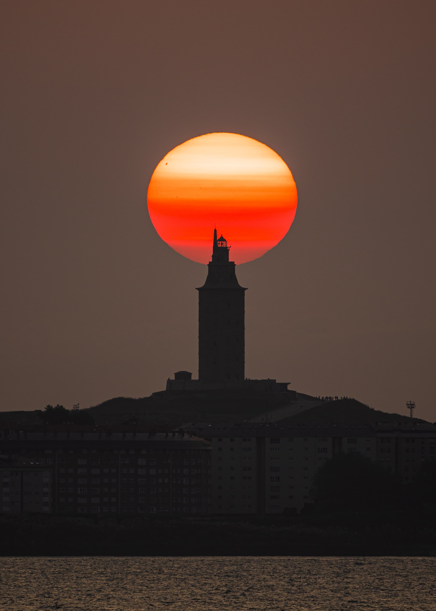
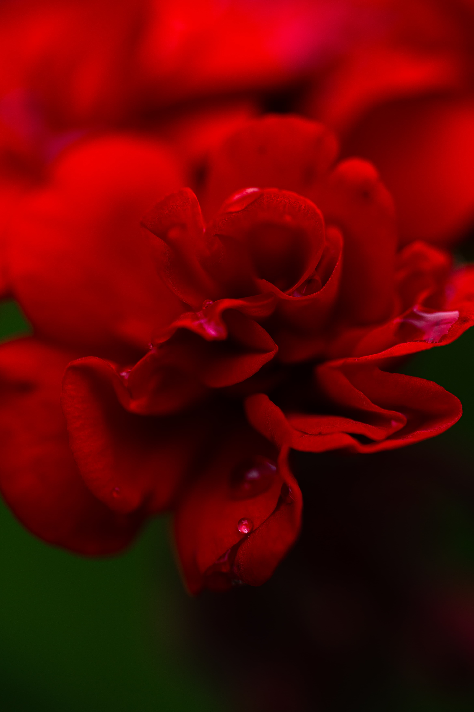
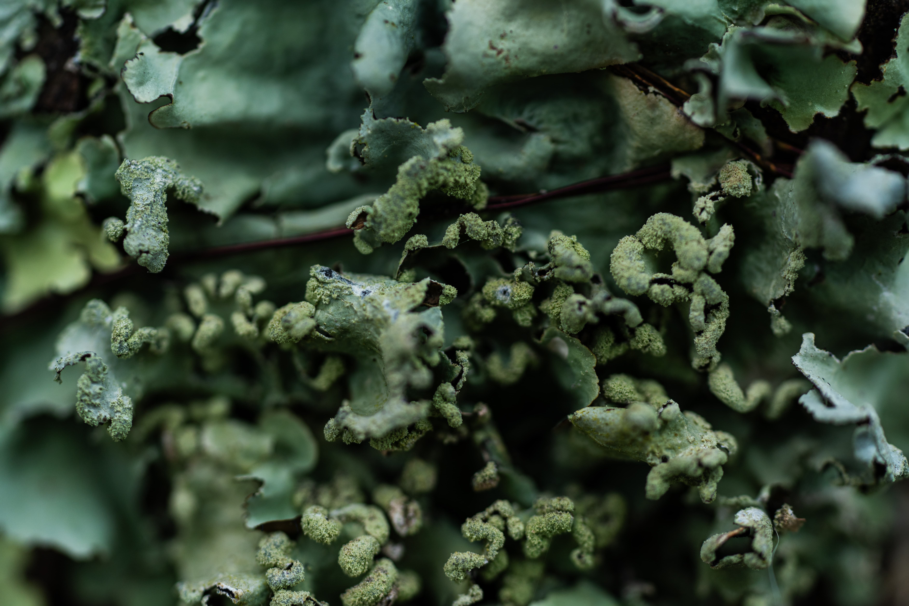

Galería











A Coruña · Fotografía urbana & astrofotografía
Capturando luz donde el faro más antiguo del mundo se encuentra con las nebulosas más lejanas del universo.
Sobre el fotógrafo
Fotógrafo aficionado con base en A Coruña. Trabajo en dos extremos opuestos de la escala: la intimidad de un insecto sobre un pétalo y la distancia de una nebulosa a miles de años luz.
La Torre de Hércules es mi referencia constante. Un punto fijo de 2.000 años de historia bajo cielos que cambian cada noche.










Contacto
¿Interesado en prints, colaboraciones o proyectos fotográficos en A Coruña?